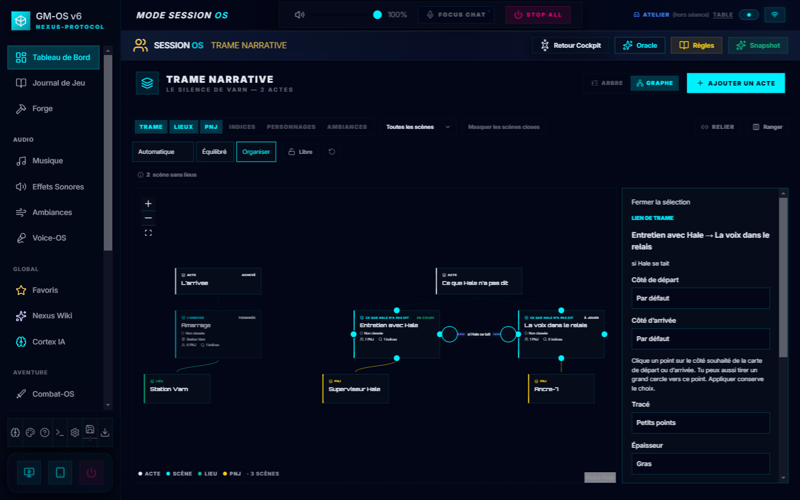
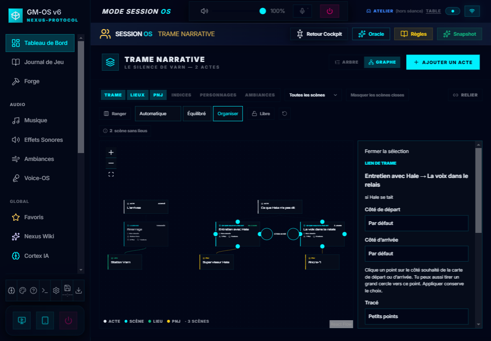
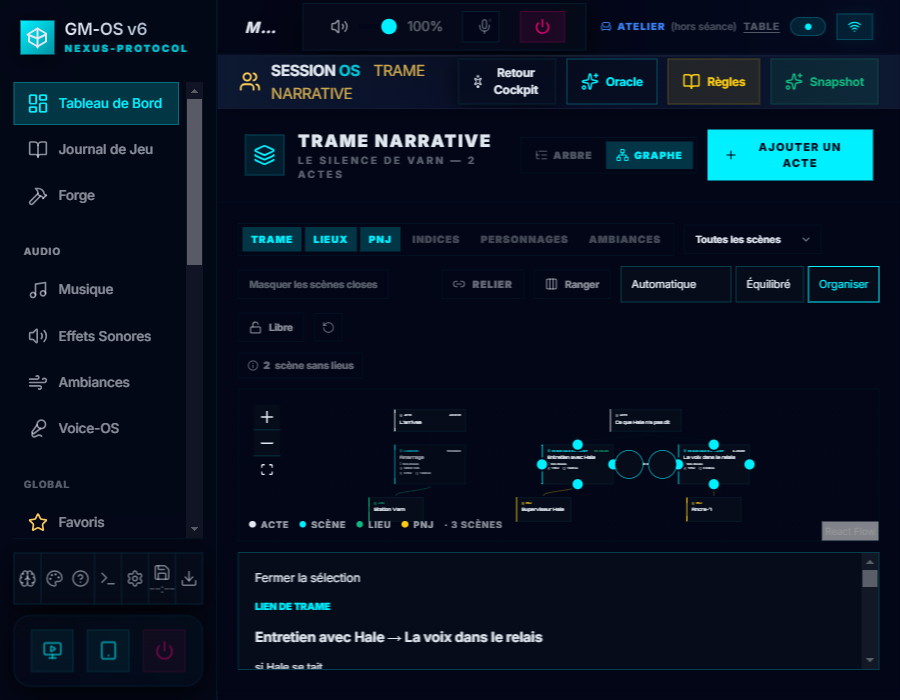
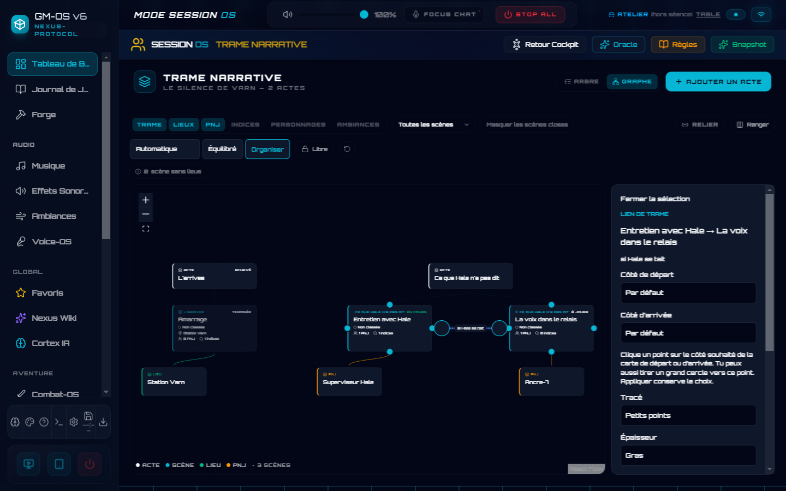
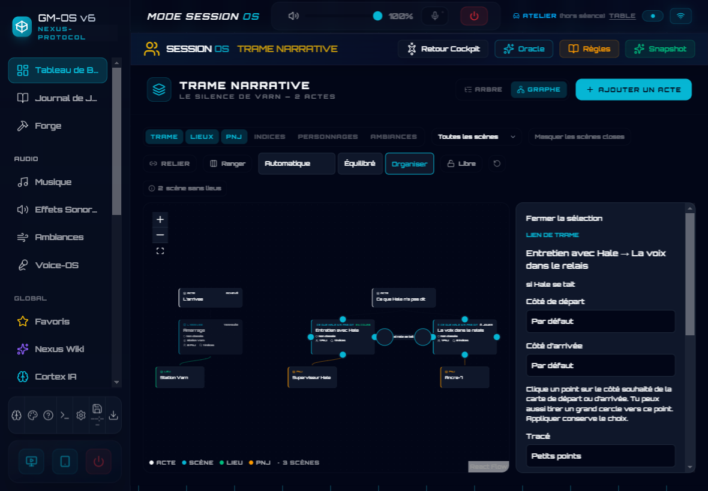
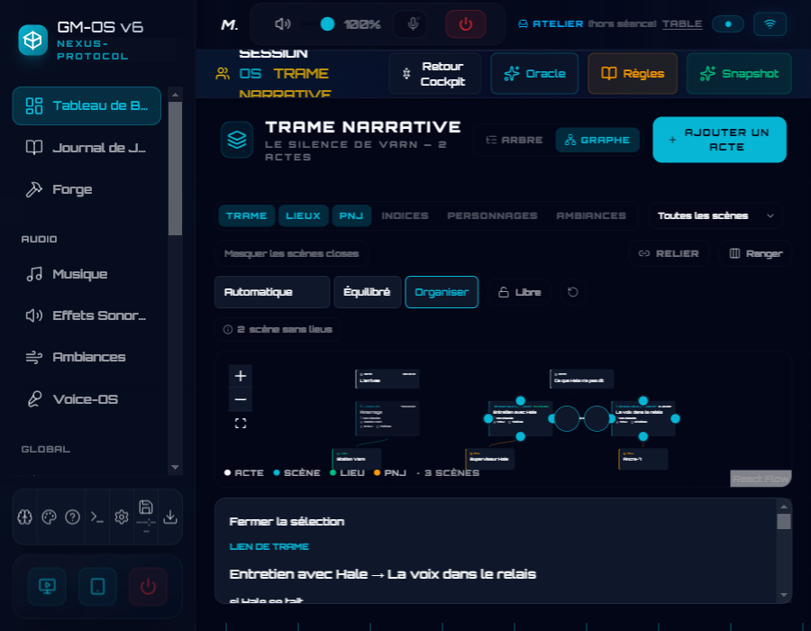

Liens de Trame · cyberpunk · 07/10/2026

cyberpunk · personnalites · 1440 px

cyberpunk · personnalites · 1180 px

cyberpunk · personnalites · 900 px

cyberpunk · base · 1440 px

cyberpunk · base · 1180 px

cyberpunk · base · 900 px